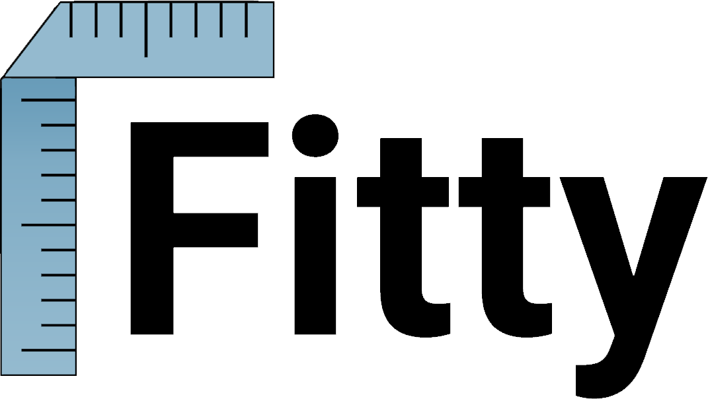

<mat-toolbar>
  
  <button mat-button routerLink="/about">About</button>
  <button mat-button routerLink="/measurements">Measurements</button>
  <button mat-button routerLink="/contact">Contact</button>
  <button class="bold_button" mat-button>
    <mat-icon>person</mat-icon>
    Login
  </button>
  <button class="bold_button" mat-button>
    <mat-icon>person_add</mat-icon>
    Sign Up
  </button>
  <button mat-raised-button>Business</button>
</mat-toolbar>
